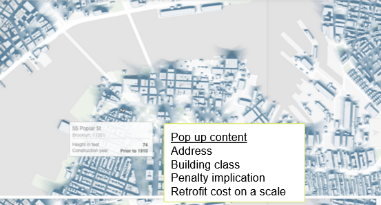
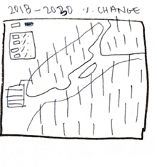
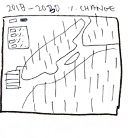

What Are the Implications of New York City's Local Law 97?
Amber Kim, Laura Kim, and Jordan Owen
In 2019, the New York City (NYC) enacted Local Law 97 (LL97), an ambitious law that sets emissions reductions limits for NYC buildings as part of the city's overarching goal of reducing emissions by 80% by 2050. Local Law 97 is important because bulidings are responsible for two-thirds of the city's emissions. Under this law, buildings over 25,000 sq ft will have to meet strict emissions limits starting in 2024.
As important as Local Law 97 is for NYC's fight against climate change, we also recognize that achieving the goals set out in LL97 will be difficult. Approximately 60% of NYC's building area is covered under the law, translating to about 50,000 buildings. Updating and retrofiting 50,000 bulidings in the next four years it a tall task that can be difficult to comprehend. Thousands of landlords will have to take action and NYC will have to implement programs to support building retrofits and monitor progress.
Therefore, we our project aims to visualize the implications of LL97 by answering three sub-questions:
- What amount of GHG reduction is required for each property owner to comply with Local Law 97?
- What are the financial implications for building owners to comply with Local Law 97?
- What are the trends/patterns in building GHG emissions in NYC?
Q1: What amount of GHG reduction is required for each property owner to comply with Local Law 97?
First, we will map the amount of emissions reduction required for each covered building in NYC by 2024 and 2030 in order to get a grasp of the magnitude of work needed to meet the LL97 goals. The reductions requirements will be expressed as a percentage (ex: building A must reduce emissions by 30% from 2018 levels to meet the 2024 limit).
Q2:What are the financial implications for building owners to comply with Local Law 97?
We will also calculate the financial implications for property owners. First, we will calculate the penalty amount for a building that takes no action. Second, we will use retrofit cost estimates from the Urban Green Council's NYC building retrofit study to estimate how much a retrofit for each building may cost to meet the LL97 limits.

Source: Urban Green Council
Map Visualization
The required emissions reductions will be visualized on a an interactive 3D map of NYC with each building's reduction represented as a vertical bar. The taller the bar, the greater the percentage. Each building will also be clickable, with a popup window containing attributes such as address, emissions reductions requirements for 2024 and 2030, building class, penalty for no action, and estimated retrofits cost. This map will serve as a tool to understand the spatial spread of building retrofit needs in the city for policymakers and for property owners to learn about their building's requirements and potential costs.
The graphics on the right are an example of what we intend to create. Similar to the first image, our map will have vertical bars that represent the percentage of emissions reduction required for each building. The map will also toggle between 2024 and 2030 (the two LL97 deadlines). We will also allow users to filter by attributes for closer exploration of the city and the buildings.
The second image is an example of a popup window that will appear when you click on a building. This is where the financial implication data from Q2 will be stored.

Q3: What are the trends/patterns in building GHG emissions in NYC?
After creating the exploratory map, we will look for interesting trend and patterns among the buildings. Perhaps there in one particular neighborhood with many inefficient buildings. Or maybe building market value, land use, age, or other attributes correlate to ineffiencies. We plan to identify three such cases and conduct a case study analysis of the trend.
Project Wireframe
On the right is a wireframe of our project. As described, we will create a map visualizing the building emissions reduction percentages as bars on a map of NYC. Then we conduct zoom in case studies of interesting trends we observed.
Project Goals
We hope that this project of visualizing the implications of LL97 will be useful for both NYC officials and property owners
as they navigate how to take action to ensure that goals are met. Officials might be able to gain insight into the spatial
distribution of building retrofit needs as well as other patterns that may require more tailored support. Property owners
can use the map to understand the magnitude of work required on their buildings and reflect on the related costs.
 
